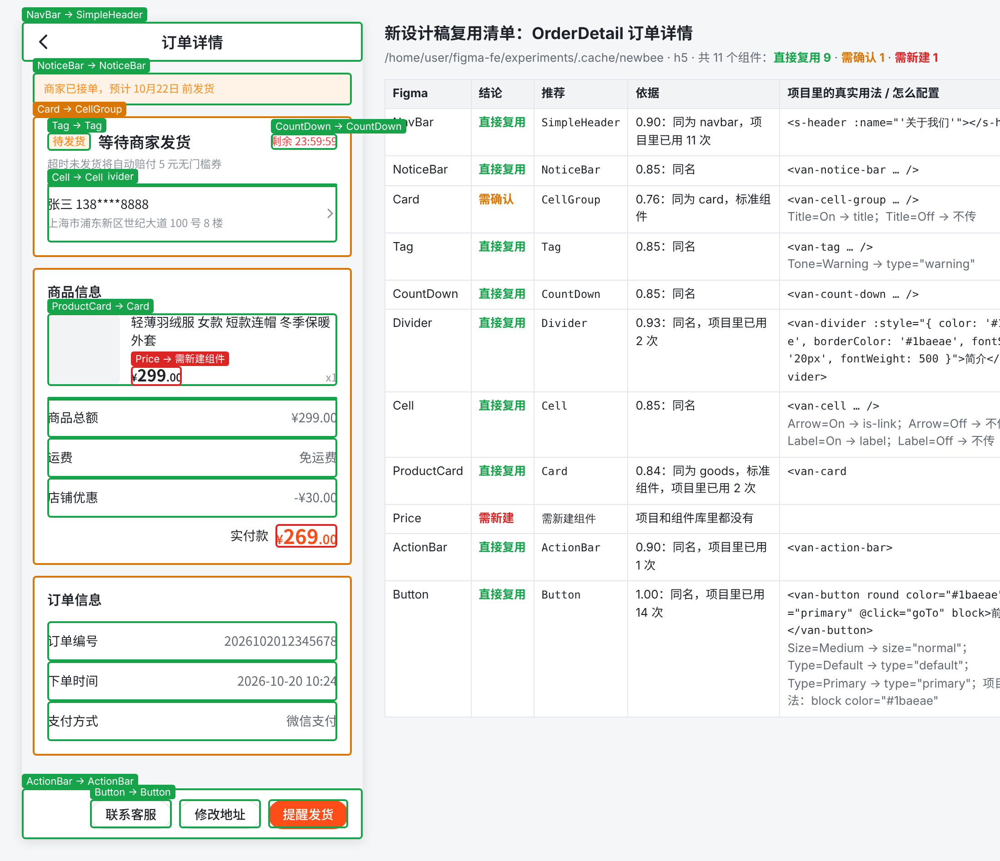
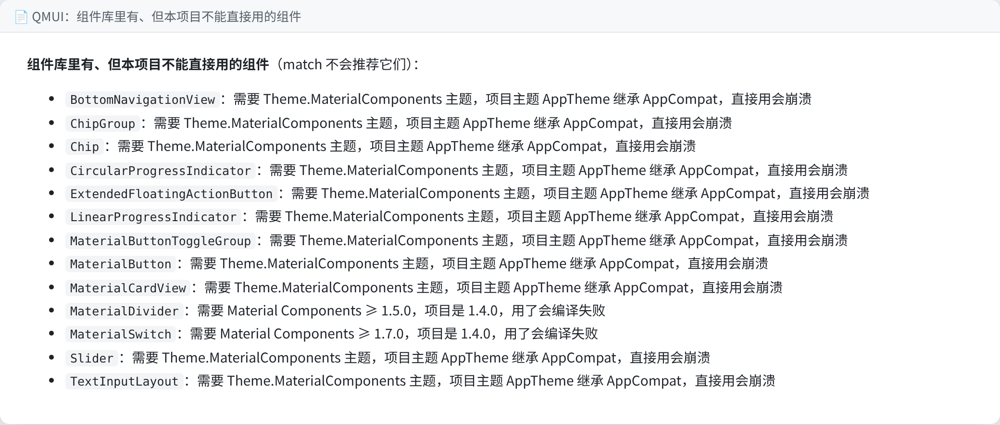
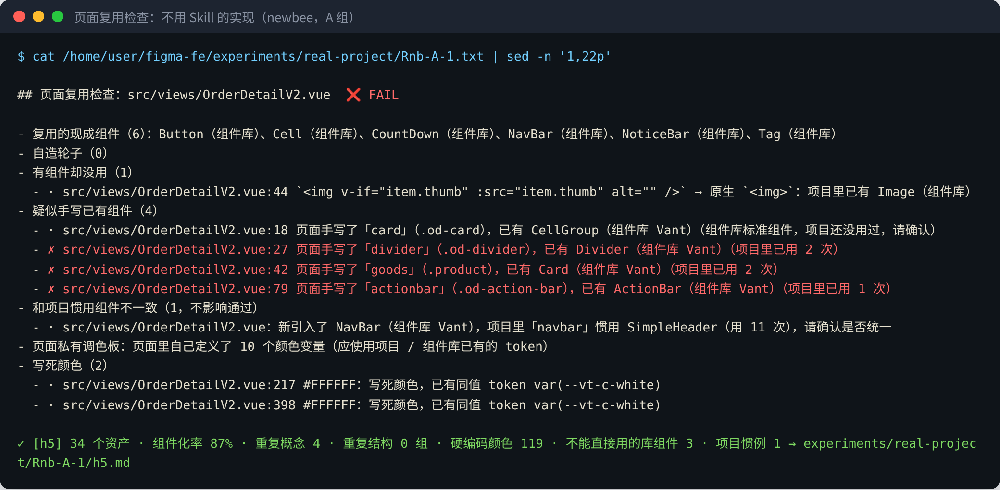
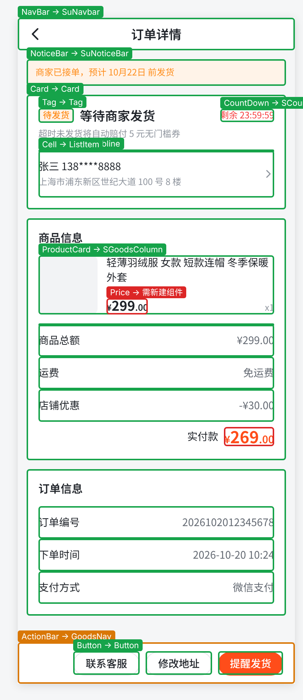
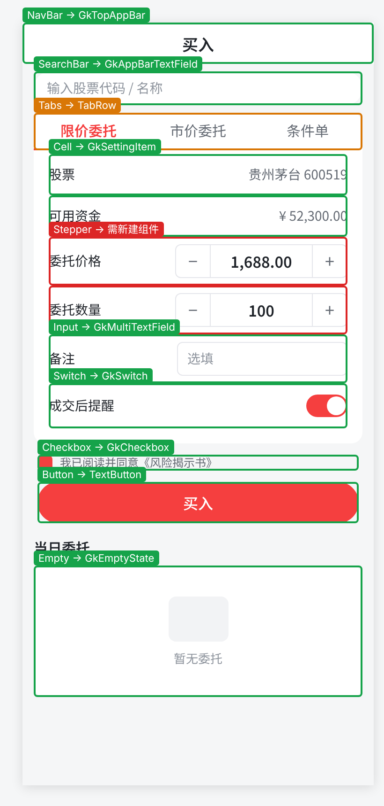
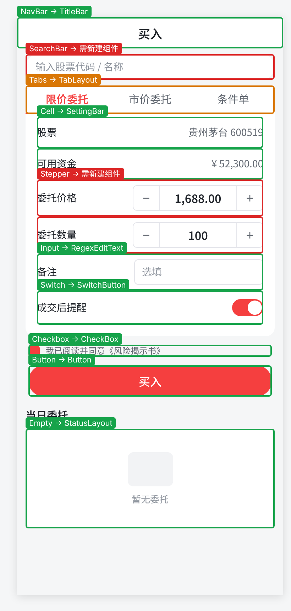
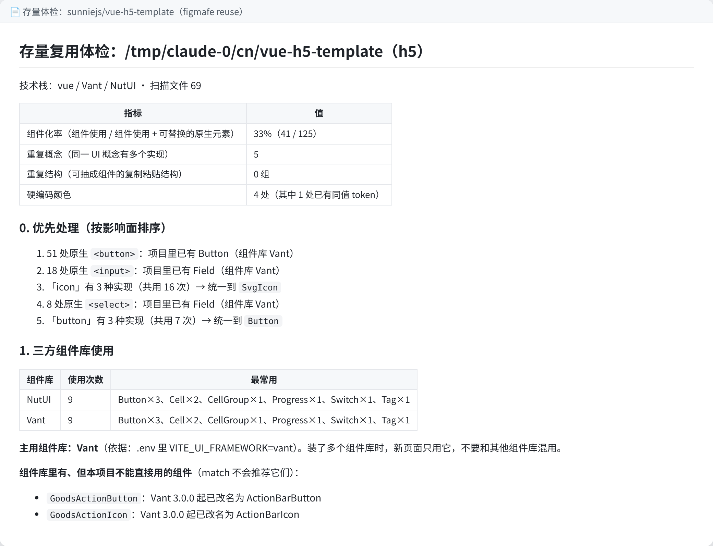
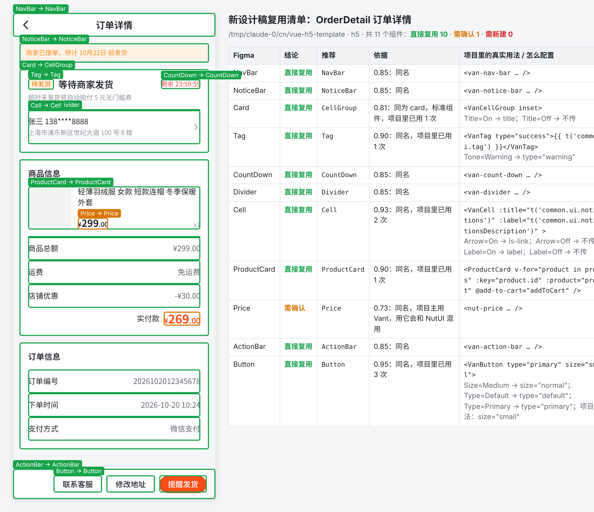

figmafe（Go）+ Skill figma-to-code + 免费 Figma 导出插件 + Demo + 分步教程 + 演示 deckfigmafe reuse 扫一遍现有 H5（Vue / React / uni-app / Taro + Vant / antd-mobile / NutUI / uni-ui / taro-ui）或 Android（XML View / Compose，QMUI / Material / AppCompat / 自有设计系统）项目，得到组件资产、项目惯例、重复实现和「组件库有但本项目用不了」的组件。figmafe match 再把新设计稿逐个元素对上去，给出「直接复用 / 需确认 / 需新建」，并附上项目里的真实写法和变体 → props 的配置。figmafe verify 一条命令输出复用率、违规、像素差异和节点级偏差，退出码可做 CI 门禁；故意埋的 3 处错误全部被抓出，修正后一次通过。reuse：资产、惯例、重复概念、复制粘贴结构、写死颜色、版本 / 主题兼容性match：Figma 元素 → 项目组件，附真实用法、props 配置、可视化叠图component-map.yaml，下次自动采用reuse --focus / --changed：自造轮子、有组件没用、手写已有组件compare / verify：截图 + 像素 / 节点级偏差，带 Figma 节点 id--baseline --no-regress 接 CI；偏差沉淀成 rules.md| Proposal 要求 | 落地方式 |
|---|---|
| Figma 组件与代码组件的对应关系 | match 按名字、UI 概念（中英文同义词）、项目前缀、使用次数、设计系统封装打分；人确认后写进 component-map.yaml，之后 match 优先采用确认过的映射 |
| 开发前识别可复用组件 | 先 reuse 再 match：只推荐本项目真能用的组件（检查组件库版本、改名 / 移除、主题依赖、废弃 API、设计系统是否封装过）；没有组件但有固定写法时推荐「项目惯例」 |
| 开发后检查用了哪些组件、和 Figma 截图对比 | reuse --focus <页面> 或 --changed <git ref> 只看新增代码；compare 截图对比；demo 里 verify 把两者合成一个门禁 |
| 偏差反馈给 Agent、沉淀规则 | 每条问题都带文件行号或 Figma 节点 id 和修改建议，Skill 规定照着改到通过；决定和理由写进 component-map，经验写进 rules.md |

newbee-mall（Vue 3 + Vant）上跑「订单详情」的复用清单：绿框直接复用、橙框需确认、红框需新建；右侧是项目里的真实写法和 Figma 变体对应的 props。
| 项目 | 订单详情 | 我的持仓 | 买入下单 |
|---|---|---|---|
| newbee | ✓11 | ✓12 | ✓10 |
| qmui | ✓11 | ✓12 | ✓8 △2 |
| nia | ✓11 | ✓12 | ✓9 △1 |
| antdm-template | ✓11 | ✓12 | ✓10 |
| antdm-mobile | ✓11 | ✓12 | ✓10 |
| jetsnack 留出 | ✓10 △1 | ✓11 △1 | ✓10 |
| litemall 留出 | ✓11 | ✓12 | ✓10 |
| hello-uniapp 留出 | ✓11 | ✓12 | ✓9 △1 |
| taro-ui-demo 留出 | ✓11 | ✓12 | ✓10 |
| nutui-vite 留出 | ✓11 | ✓12 | ✓10 |
| sunflower 留出 | ✓10 △1 | ✓11 △1 | ✓10 |
| pokedex 留出 | ✓11 | ✓12 | ✓10 |
| newpipe 留出 | ✓10 △1 | ✓11 △1 | ✓8 △2 |
| 项目 | 订单详情 | 我的持仓 | 买入下单 |
|---|---|---|---|
| vant-demo-vue3 留出 | ✓11 | ✓12 | ✓10 |
| vant-demo-vue2 留出 | ✓11 | ✓12 | ✓10 |
| vue3-vant-mobile 留出 | ✓11 | ✓12 | ✓10 |
| mall-app-web 留出 | ✓10 △1 | ✓12 | ✓10 |
| antennapod 留出 | ✓10 △1 | ✓11 △1 | ✓9 △1 |
| wanandroid 留出 | ✓11 | ✓12 | ✓10 |
| seal 留出 | ✓10 △1 | ✓11 △1 | ✓9 △1 |
| kunminx 留出 | ✓10 △1 | ✓11 △1 | ✓7 △3 |
| jeecg-uniapp 留出 | ✓11 | ✓12 | ✓10 |
| vue-h5-template 留出 | ✓10 △1 | ✓12 | ✓10 |
| yudao-mall 留出 | ✓10 △1 | ✓11 △1 | ✓10 |
| gkd 留出 | ✓10 △1 | ✓11 △1 | ✓10 |
| androidproject 留出 | ✓10 △1 | ✓11 △1 | ✓10 |
合计 ✓827 / △31 / ✗0（858 项）。技术栈：Vue 2/3、React、uni-app、Taro × Vant / NutUI / antd-mobile / uni-ui / taro-ui / wot-design-uni / 自有组件；Android XML / Compose × QMUI / Material / AppCompat / 三方 View 库 / 自有设计系统（逐项见 experiments/real-match-eval.md）。订单详情是组件化设计稿，我的持仓未组件化、中文图层，买入下单未组件化、含新概念。
✓ 推荐正确；△ 可用但不是最优（多为「需确认」）；✗ 推荐错误。留出 = 调规则时没用过的项目。
| 项目 | 第一次 | 出错原因 → 通用修正 |
|---|---|---|
| Jetsnack | 订单详情 3 ✗ | 把桌面小部件（Glance）组件当成 App 组件；没认出 Jetsnack* 是项目前缀 → 识别 Glance、学习项目前缀、ui/components 算设计系统 |
| litemall | 两份各 1 ✗ | 推荐了 Vant 3 才有的 ActionBar，项目是 Vant 2 → 组件库加入改名 / 移除信息，按实际安装版本过滤 |
| hello-uniapp | 持仓页 12 ✗ | uni-app 内置小写标签被当成项目组件、中文图层名规范化后为空被判「同名」→ 加 uni-ui 目录，修空名误判 |
| NewPipe | 3 ✗ | AppCompat 标准控件没算进项目资产，XML 页面被推荐 Compose 组件 → 跨技术栈的候选最多「需确认」 |
| mall-app-web / AntennaPod（第二批） | 崩溃 + 1 ✗ / 1 ✗ | uni-app 内置标签没有 import 路径导致崩溃；<view> 用量压低了 uni-ui 的占比；AntennaPod 的空状态封装 EmptyViewHandler 不是 View → 修崩溃、占比排除平台内置元素、识别「界面封装类」 |
| WanAndroid / Seal / KunMinX / jeecg（第三批） | 11 / 7 / 3 / 11 ✗ | 三方 View 库和 wot-design-uni 没被收录；Android 的 ActionBar 是顶栏；「Video*」被当成项目前缀；PasswordInputView / ConfirmButton 这类专门用途组件被当成通用组件；会崩溃的 Material 组件没有别的候选时仍排第一 → 逐条改成通用规则 |
| vue-h5-template（第四批） | 23 ✗ | 同时装了 Vant / NutUI / Varlet，打分打平后一半推荐 NutUI，同一页面混用两套组件库；演示页被当成设计系统 → 先定「主用组件库」（看 .env 里的 UI 配置项），目录按最外层分类（见第 4 节） |
| 芋道商城 / gkd / AndroidProject（第四批，大型系统） | 崩溃 / 5 ✗ / 8 ✗ | props 三元默认值让扫描崩溃；图标按钮被当成文字按钮；54 个 AppCompatButton 漏数；「验证码倒计时」被当成倒计时组件（逐项见第 3 节） |
| 买入下单（新设计稿） | 14 个项目 12 ✗ | 开关 / 复选框 / 单选原来是一个概念，搜索算在输入框里 → 拆开概念、补词表、检查 Material 3 主题 |
vant-demo、Pokedex、Sunflower、vue3-vant-mobile 第一次跑就没有 ✗。复用推荐只错在「项目没见过的结构」，修正都是通用规则，没有针对单个项目的特判；python3 experiments/real-match-eval.py 每次改规则都会全量回归。

QMUI_Android 用的是 AppCompat 主题和 Material 1.4：这些组件会崩溃或编译失败，match 不会推荐。

不用 Skill 的实现（newbee，A 组）：分割线、商品卡、底部操作栏都是手写的，每条带行号和应复用的组件。
前面的项目多是模板和示例。为了看工具在规模大、写法杂的生产系统上表现如何，又挑了三个国内常见的大型开源系统：H5 商城芋道（uni-app）、Compose 应用 gkd、国内很多 App 的骨架 AndroidProject（XML）。每个系统都按 Skill 的顺序跑：figmafe reuse 体检 → figmafe match 出复用清单 → 人工逐条判断 → 出错的改成通用规则 → 26 个项目全量回归。标准答案在跑当前版本之前写好；「第一次跑」是这一轮修正前的版本（commit 19762fb）。
| 系统 | 订单详情 | 我的持仓 | 买入下单 | 第一次跑 |
|---|---|---|---|---|
| 芋道商城 yudao-mall-uniapp（H5 · uni-app） | ✓10 △1 | ✓11 △1 | ✓10 | 扫描崩溃 |
| gkd（Android · Compose Multiplatform） | ✓10 △1 | ✓11 △1 | ✓10 | 5 ✗ |
| AndroidProject（Android · XML View） | ✓10 △1 | ✓11 △1 | ✓10 | 8 ✗ |
uni-app 商城：自有设计系统 sheep/ui（su-*）+ 业务组件 sheep/components（s-*）+ uni-ui

复用清单叠图（订单详情（组件化设计稿））：绿框直接复用、橙框需确认、红框需新建。
组件库用量：uni-app 内置组件 374、uni-ui 128；设计系统封装：Swiper → SuSwiper
体检优先处理
ButtonSGoodsColumn复用清单（订单详情（组件化设计稿）：直接复用 9 · 需确认 1 · 需新建 1）
| 设计稿元素 | 结论 | 推荐 | 依据 |
|---|---|---|---|
| NavBar | 直接复用 | SuNavbar | 同名，项目里已用 1 次，设计系统组件 |
| NoticeBar | 直接复用 | SuNoticeBar | 同名，变体轴匹配 1/1，项目里已用 1 次，设计系统组件 |
| Card | 直接复用 | Card | 同名 |
| Tag | 直接复用 | Tag | 同名，项目里已用 1 次 |
| CountDown | 直接复用 | SCountDown | 同名，项目里已用 1 次 |
| Divider | 直接复用 | SuSubline | 同为 divider，项目里已用 1 次，设计系统组件 |
| Cell | 直接复用 | ListItem | 同为 cell，标准组件，项目里已用 6 次 |
| ProductCard | 直接复用 | SGoodsColumn | 同为 goods，项目里已用 34 次 |
| Price | 需新建 | — | 项目和组件库里都没有 |
| ActionBar | 需确认 | GoodsNav | 同为 actionbar，标准组件 |
| Button | 直接复用 | Button | 同名，项目里已用 186 次 |
第一次跑（这一轮修正前）：扫描直接崩溃（三份设计稿都跑不出来）。现在：订单详情 ✓10 △1 · 我的持仓 ✓11 △1 · 买入下单 ✓10。
a ? b : c 形式的默认值让 props 解析越界 → 冒号前必须有键名（加回归测试）<image> 的封装，但项目直接写 <image> 71 次、su-image 4 次 → 封装组件用得不到原生一半时不算封装还剩的问题：底部操作栏：项目的 detail-tabbar.vue（4 个商品页在用）按钮从插槽传入，文件本身看不出是操作栏，工具给的是 uni-ui GoodsNav（需确认）
Jetpack Compose + Material3，自有 ui/component（GkTopAppBar、GkSettingItem、GkSwitch …）

复用清单叠图（买入下单（未组件化、英文图层））：绿框直接复用、橙框需确认、红框需新建。
组件库用量：Compose Material3 174、Compose Foundation 20；设计系统封装：Checkbox → GkCheckbox、FloatingActionButton → GkAnimatedFloatingActionButton、ModalBottomSheet → GkModalBottomSheet、Switch → GkSwitch、TextField → GkMultiTextField、TopAppBar → GkTopAppBar
体检优先处理
GkDialogCardGkMultiTextField复用清单（买入下单（未组件化、英文图层）：直接复用 8 · 需确认 1 · 需新建 1）
| 设计稿元素 | 结论 | 推荐 | 依据 |
|---|---|---|---|
| NavBar | 直接复用 | GkTopAppBar | 同为 navbar，项目里已用 28 次，设计系统组件 |
| SearchBar | 直接复用 | GkAppBarTextField | 同为 search，6 处调用里有 6 处传的是搜索词，是项目的搜索框，项目里已用 6 次，设计系统组件 |
| Tabs | 需确认 | TabRow | 同为 tabs |
| Cell | 直接复用 | GkSettingItem | 同为 cell，项目里已用 23 次，设计系统组件 |
| Stepper | 需新建 | — | 项目和组件库里都没有 |
| Input | 直接复用 | GkMultiTextField | 同为 input，项目里已用 6 次，设计系统组件 |
| Switch | 直接复用 | GkSwitch | 同名，可选中组件，设计稿里是静态展示，项目里已用 7 次，设计系统组件 |
| Checkbox | 直接复用 | GkCheckbox | 同名，可选中组件，设计稿里是静态展示，项目里已用 6 次，设计系统组件 |
| Button | 直接复用 | TextButton | 同为 button，项目里已用 72 次 |
| Empty | 直接复用 | GkEmptyState | 名称包含，项目里已用 15 次，设计系统组件 |
第一次跑（这一轮修正前）：订单详情 9 ✓ / 1 △ / 1 ✗；我的持仓 8 ✓ / 1 △ / 3 ✗；买入下单 8 ✓ / 1 △ / 1 ✗。现在：订单详情 ✓10 △1 · 我的持仓 ✓11 △1 · 买入下单 ✓10。
package.json 让它被当成 H5 项目，自动识别平台时全部「需新建」→ 依赖里有前端框架才算 H5value = searchStr）的输入组件按用法认作搜索框还剩的问题：涨跌标签推荐了 M3 InputChip（需确认）：项目里没有标签组件，严格说应新建
XML + DataBinding 骨架：TitleBar 三方库 + 自有 customWidget 库（SettingBar、SwitchButton、RegexEditText …）+ StatusLayout

复用清单叠图（买入下单（未组件化、英文图层））：绿框直接复用、橙框需确认、红框需新建。
组件库用量：Android SDK widgets 103、com.hjq.bar 13、com.hjq.shape 5、Material Components 1、com.airbnb.lottie 1、com.hjq.nested 1、me.relex.circleindicator 1
体检优先处理
复用清单（买入下单（未组件化、英文图层）：直接复用 7 · 需确认 1 · 需新建 2）
| 设计稿元素 | 结论 | 推荐 | 依据 |
|---|---|---|---|
| NavBar | 直接复用 | TitleBar | 同为 navbar，标准组件，项目里已用 13 次 |
| SearchBar | 需新建 | — | 项目和组件库里都没有 |
| Tabs | 需确认 | TabLayout | 同为 tabs，项目几乎不用 Material Components，标准组件 |
| Cell | 直接复用 | SettingBar | 同为 cell，项目里已用 14 次 |
| Stepper | 需新建 | — | 项目和组件库里都没有 |
| Input | 直接复用 | RegexEditText | 同为 input，项目里已用 14 次 |
| Switch | 直接复用 | SwitchButton | 同为 switch，项目里已用 8 次 |
| Checkbox | 直接复用 | CheckBox | 同名，系统原生控件，项目里已用 3 次 |
| Button | 直接复用 | Button | 同名，系统原生控件，项目里已用 54 次 |
| Empty | 直接复用 | StatusLayout | 同为 empty，项目里已用 4 次 |
第一次跑（这一轮修正前）：订单详情 8 ✓ / 1 △ / 2 ✗；我的持仓 8 ✓ / 1 △ / 3 ✗；买入下单 7 ✓ / 3 ✗。现在：订单详情 ✓10 △1 · 我的持仓 ✓11 △1 · 买入下单 ✓10。
AppCompatButton 没算成平台 Button，于是推荐了只用过 1 次的 SubmitButton → AppCompat* 计入对应的平台控件还剩的问题：支付倒计时其实要新建：工具给的是「需确认 CountdownView（专门用途：验证码）」，由人来否掉
sunniejs/vue-h5-template 是国内常用的 Vue 3 + Vant H5 模板（commit 9ac24512）。这是唯一一个真的安装依赖、跑类型检查、构建和像素对比的项目：让 Agent 按 Skill 实现「订单详情」，再用同一套命令验收。
.env 里 VITE_UI_FRAMEWORK=vant → 主用 Vantsrc/views/order/detail.vue + 新建 PriceText.vue，component-map 写明理由vue-tsc 通过 · vite build 通过 · 50 个单测通过
体检报告：主用组件库 Vant（依据 .env），列出另外两套组件库的用量。

修正后的复用清单叠图：全部推荐 Vant，Price 只在 NutUI 里有，标「需确认」。
像素对比 7.11%，没通过。差异来自项目主题：靛蓝主色、44px 高的按钮、字体都和设计稿不同。组件复用对了，样式还要对齐项目的主题 token：这正是存量项目的常态，新页面应该用项目的主题，而不是照抄设计稿的颜色。
| Agent 反馈的工具问题 | 处理 |
|---|---|
| ProductCard 推荐了商城网格里的 ProductCard，实际用了 Vant Card | 两种都合理，回归用例的标准答案收下两者 |
Size=Medium 按名字映射成 size="normal"（44px），设计稿按钮 32px | 已修：按设计稿里实例的高度选尺寸，给出「Size=Medium（设计稿高 32px）→ size="small"（Vant small = 32px），按名字会对到 normal（44px）」 |
布局组件 Layout（含 <router-view> 和固定底栏）被当成操作栏候选 | 已修：含 router-view 的组件是页面外壳，不算任何栏 |
| Card 映射到 CellGroup 的 title，但 title 显示在 inset 卡片外面 | 已修：属性提示里写明「标题要在卡片里时，用第一行 Cell 当标题」 |
同一份设计稿（订单详情），在 5 个开源项目里新建页面。A 组只给任务和 Figma 导出，C 组加上 Skill（体检 → 复用清单 → 实现 → 页面检查）。所有 run 用同一版 figmafe reuse --focus / --changed 打分：自造已有组件、有组件没用、手写已有组件（按 class / id 或横排「标题 + 值」结构识别）任何一项都算不通过。
| 项目 | 技术栈 | A 不用 Skill（Opus / Haiku） | C 用 Skill（Opus / Haiku） | ||||
|---|---|---|---|---|---|---|---|
| 通过 | 复用组件数 | 问题数 | 通过 | 复用组件数 | 问题数 | ||
| newbee-mall | Vue 3 + Vant | 0/3 | 6 / 6 / 0 | 4 / 4 / 14 | 3/3 | 12 / 12 / 10 | 0 / 0 / 0 |
| litemall（留出） | Vue 2 + Vant 2 | 0/1 | 1 | 14 | 2/2 | 10 / 9 | 0 / 0 |
| QMUI_Android | XML + QMUI | 0/3 | 8 / 9 / 6 | 1 / 1 / 1 | 3/3 | 9 / 8 / 8 | 0 / 0 / 0 |
| NewPipe（留出） | XML + AppCompat | 0/1 | 3 | 2 | 1/1 | 6 | 0 |
| Now in Android | Compose + 自有设计系统 | 0/3 | 2 / 2 / 1 | 6 / 6 / 2 | 2/3 | 7 / 8 / 8 | 2 / 0 / 0 |
| 合计 | 0/11 | 平均 4.0 | 共 55 | 11/12 | 平均 8.9 | 共 2 | |
verify 能区分「页面写错」和「组件本身不符合设计」（见 docs/component-issues.md）；教程第 8 步故意写错 3 处，全部被抓出。| 阶段 | 项目数 | 结果 | 这一阶段新增的通用规则（举例） |
|---|---|---|---|
| 报告初版 | 22 | ✓699 △27 ✗0 | 版本 / 主题兼容性检查、项目惯例、设计系统封装 |
| + vue-h5-template | 23 | ✓734 △25 ✗0 | 装了多套组件库时定主用库；只有依赖里的包才算三方库 |
| + 三个大型系统 | 26 | ✓826 △32 ✗0 | 读组件文档注释；AppCompat* 算平台控件；建立在其他组件之上的算特化 |
| 继续迭代（当前） | 26 | ✓827 △31 ✗0 | 按设计稿高度选尺寸；按调用处用法认出搜索框 |
每加一批项目，先按人工写好的答案跑一次、如实记录错误，再修成通用规则；每次修改都重跑 26 个项目和真实项目实验的打分（experiments/rescore-real.sh），这几轮打分都没有变化。
| # | 动作 | 产出 |
|---|---|---|
| 1 | figmafe reuse <H5 / Android 仓库>（只读，不改代码） | 资产清单、优先处理项、首份体检基线 |
| 2 | Figma 插件导出下一个要做的页面，figmafe match | 复用清单 + 叠图，组件 owner 确认「需确认」项 |
| 3 | 开发时让 Agent 按 Skill 走；提交前 reuse --changed origin/main | 新增代码的复用问题，带行号 |
| 4 | CI 里 reuse --baseline main.json --no-regress（示例：docs/ci/） | 组件化率、写死颜色等指标只许变好 |
教程：docs/tutorial/README.md · 数据：experiments/real-match-eval.md、match-judgement.md、real-project/summary.md